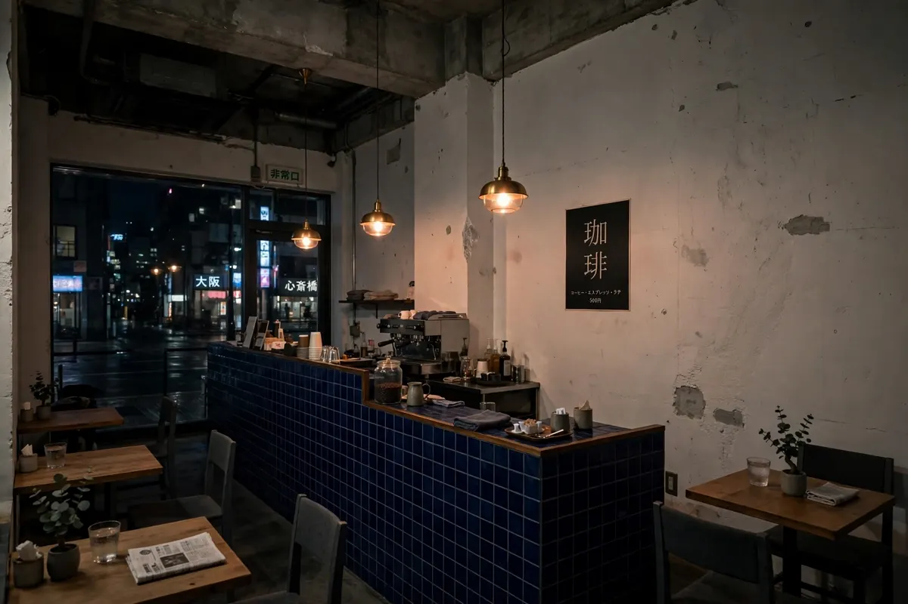

夜に味わう、あなたの時間。
19時から24時まで開いている、大阪・新町の夜カフェ。
cafe NOC.（カフェ ノック）― 四ツ橋駅から徒歩5分、心斎橋駅から徒歩11分。ビルの3階にある、静かな隠れ家です
★4.9
Google評価
169件
Google口コミ
19–24時
夜だけの営業
18席
静かな小箱
一日の終わりに、扉をひとつ開けるような場所。その理由は3つあります。
営業は19時から24時まで。天井が高く、白とコンクリートの店内に濃紺タイルのカウンターが映えます。口コミでも「静かに過ごせる」という声が多い一軒です。
メニューの数は多くありません。その代わり、どのスイーツにどのドリンクを合わせるかは自由です。自分だけのお気に入りの組み合わせを見つける楽しみがあります。
coffee & alcohol。しっかり甘いスイーツには、すっきりしたコーヒーを。ノンアルコールのシャーリーテンプルなどもあり、お酒が飲めない夜にも寄れます。
迷ったら、まずこのあたりから。
※価格は店頭のメニューでご確認ください（ご予算の目安は1,000〜2,000円ほど）。写真はすべてイメージです。
ふらっと立ち寄れる夜に。
Instagramで最新情報をチェック
@cafe_noc._ ― 営業のお知らせや日々の様子を投稿しています
| 店名 | cafe NOC.（カフェ ノック） |
|---|---|
| 住所 | 〒550-0013 大阪府大阪市西区新町1-18-24 3F |
| アクセス | 大阪メトロ四つ橋線「四ツ橋駅」から徒歩5分 「心斎橋駅」から徒歩11分／「西大橋駅」から約260m |
| 電話 | 06-6534-3701 |
| 営業時間 | 19:00〜24:00 |
| 定休日 | 年中無休（年末年始を除く） |
| 席数 | 18席（全席禁煙） |
| お支払い | PayPay可（クレジットカード・電子マネー不可） |
| @cafe_noc._ |